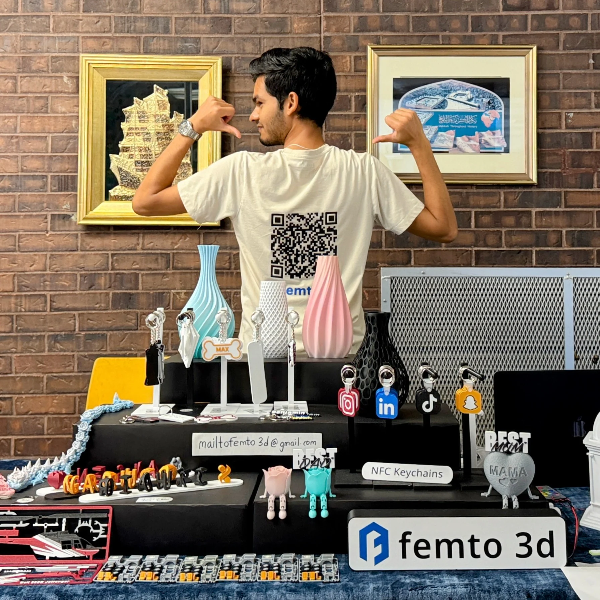

Femto 3D — Engineering Prototyping Firm
Client Projects Delivered
Defect Returns (Zero-Defect Rate)
Years of Operation
Concurrent Projects/Month
Femto 3D is a precision engineering prototyping firm I founded in Tiruchirappalli, India in 2021, later expanding to Windsor, Canada in January 2025. The firm delivers custom electromechanical assemblies, IoT systems, embedded firmware, and 3D-printed product solutions to industrial clients across manufacturing, medical device, and consumer electronics sectors.
As sole founder and engineer, I handled every stage of the product lifecycle — client requirements gathering, CAD design, material selection and 3D printing, firmware development, assembly, QA testing, and delivery. This end-to-end ownership across 200+ projects developed exceptionally broad and deep engineering competency.
Key differentiator: zero-defect return rate across all client deliverables, maintained through strict in-process dimensional inspection (calipers, GD&T verification against engineering drawings) and functional validation before handoff.
Manufacturing · Medical Devices · Consumer Electronics · Agriculture · Industrial Automation
Met with clients (in-person or remotely) to gather functional requirements, dimensional constraints, material preferences, budget, and timeline. Created a brief technical specification document and confirmed feasibility. Quoted projects based on material cost + print time + firmware hours.
All custom mechanical parts designed in Fusion 360. For existing products, performed reverse engineering using calipers and photographs to recreate the geometry. Applied GD&T tolerancing for functional fits (servo mounts, bearing housings, snap-fits). Parts designed with 3D printing constraints in mind — print orientation, support structures, wall thickness minimums, and shrinkage compensation.
Operated and maintained FDM printers (Creality Ender 3/5, Prusa MK3S) and SLA printer (Anycubic Photon). Calibrated bed leveling, E-steps, and PID temperature control regularly. Sliced parts in Cura/PrusaSlicer with optimized settings per material: PLA (215°C, 60° bed), ABS (240°C, 100° bed, enclosure), TPU (220°C, direct drive, 20mm/s), PETG (230°C, 80° bed). SLA: exposure time calibrated per resin batch. Post-processing: sanding, primer, paint, heat-set inserts, tapping.
For projects requiring electronics: programmed Arduino, STM32, and ESP32 microcontrollers in Embedded C/MicroPython. Integrated sensors (temperature, pressure, proximity, force, gas) with actuators (motors, solenoids, relays, displays) per client spec. For IoT projects: set up MQTT communication, Raspberry Pi gateway, and cloud/dashboard integration. Typical firmware delivery: 3–7 days including functional testing.
Every part inspected with digital calipers against engineering drawing tolerances before delivery. For mechanical assemblies: fit and function test (moving parts, fastener engagement, tolerance stack-up). For electronics: continuity test, power-on test, functional validation against spec. Zero defects sent to customers — any non-conforming parts were reprinted at my cost.
Secured B2B contracts through live prototype demonstrations at trade fairs and engineering exhibitions across Tamil Nadu. Managed all client communications, order management, invoicing, and delivery logistics independently. Built a repeat-client base through consistent quality and on-time delivery.